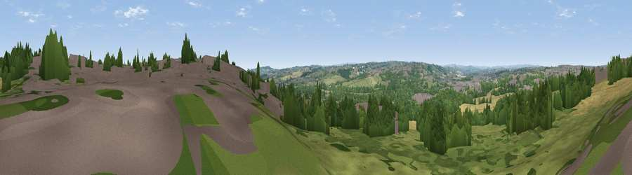

Viewpoint near Ossett
#19024 in England · top 25% of its area beats it · near OssettWhere it is
The exact computed spot (SE 27125 20425). Click the marker for map links.
The view, rendered

A 360° render of this exact spot computed from the terrain model, tree cover and land cover — summer colours, afternoon light, calibrated against photographs of famous viewpoints. Real trees, hedges and buildings will differ in detail.
The panorama
Grey silhouette: terrain skyline in each direction (720 bearings, Earth curvature and refraction included). Dashed green: skyline with trees (+15 m) and buildings (+8 m) as obstacles. Blue strip: how far the ground is visible on each bearing.
Where the view opens
Wedge length = distance to the farthest visible ground on that bearing (vegetation-aware). Rings at 10, 25 and 50 km.
What fills the view
36% woodland · 33% grassland · 17% built-up · 15% cropland
Angular shares of the visible panorama (visual magnitude), not map area. Landscape diversity 0.57 (0–1 Shannon).
Key numbers
More beautiful places nearby
The staircase of upgrades: each row has a higher view potential than everything closer. Driving times are estimates from straight-line distance, calibrated against real road routing — check an actual route before setting out.
| Place | Direction | Drive | Score |
|---|---|---|---|
| Viewpoint near Thornhill | WSW · 4 km | ~9 min | 61.0 |
| Viewpoint near Woodkirk | NNW · 5 km | ~12 min | 62.1 |
| Viewpoint near Grange Moor | SW · 6 km | ~13 min | 69.8 |
| Castle Hill | WSW · 13 km | ~25 min | 70.2 |
| Viewpoint near Hoylandswaine | S · 16 km | ~28 min | 71.8 |
| Viewpoint near Hoylandswaine | S · 16 km | ~28 min | 72.7 |
| Viewpoint near Jackson Bridge | SW · 16 km | ~28 min | 73.5 |
| Viewpoint near Wharncliffe Side | S · 24 km | ~39 min | 75.0 |
53.67959, -1.59083 · source: screening · position refined by local search. Computed location — check access rights before visiting.